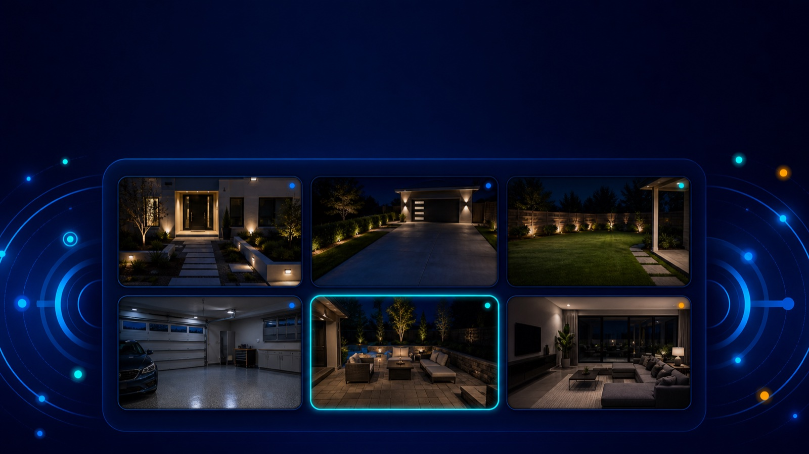

直接連接
使用設備本身的位址與存取資訊連線，不必為了觀看影像註冊品牌雲端帳號。
Cam-Hub 讓您直接連接相容的攝影機與錄影主機，不需為觀看影像另外註冊品牌雲端帳號。

少一層帳號，多一點掌控
加入單一攝影機，或連接部分相容的 NVR、DVR 與 NAS 監控系統。Cam-Hub 將通道整理在一致的介面中，讓查看與切換更簡單。
使用設備本身的位址與存取資訊連線，不必為了觀看影像註冊品牌雲端帳號。
把不同攝影機與錄影主機的通道混合成一個專屬監看面板。
支援 ONVIF 與 RTSP 串流，並針對部分設備提供相容連接。
查看即時影像，並在支援的設備上搜尋與播放錄影內容。
目前相容性
* 僅代表部分設備與功能經過相容性測試，不代表與品牌原廠存在合作、贊助或官方認可關係。實際功能依型號、韌體與設定而異。
CAM-HUB